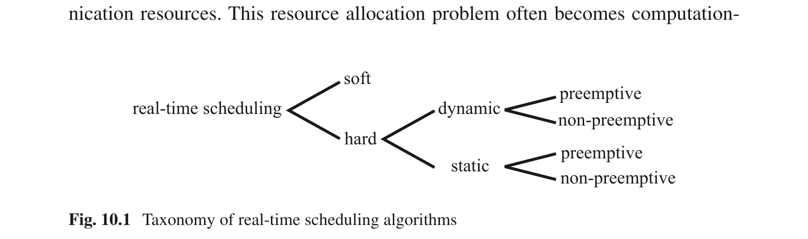
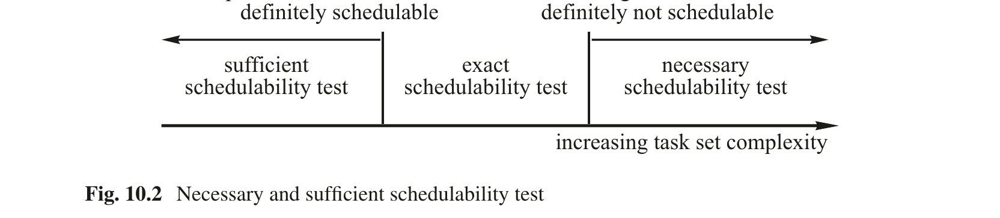
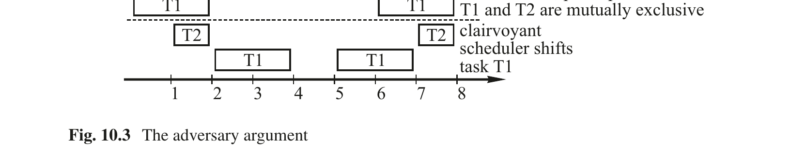
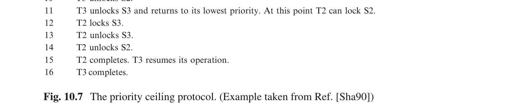

第10章 实时调度
Real-Time Systems — Hermann Kopetz & Wilfried Steiner 著 | AI 辅助翻译
本章概述
关于如何在一组资源有限的系统中调度一组任务，使得所有任务都能满足其截止时间，已有成千上万篇研究论文。本章试图总结与实时系统设计者相关的一些重要调度研究成果。本章首先引入可调度性测试的概念，以确定给定的任务集是否可调度。它区分了充分、精确和必要的可调度性测试。如果一个调度算法在存在解的情况下总能找到调度方案，则称其为最优调度算法。对手论证表明，一般来说不可能设计出最优的在线调度算法。应用任何调度技术的前提是了解所有时间关键任务的最坏情况执行时间（WCET）。第 10.2 节介绍了估算简单任务和复杂任务 WCET 的技术。具有流水线和缓存的现代处理器使得获得 WCET 的紧界变得困难。随时算法包含一个提供足够（但较低）质量结果的根段，以及一个改进先前结果质量的可选周期段，为摆脱这一困境指明了方向。它们利用具体任务执行中根段的实际执行时间与截止时间（即根段的最坏执行时间）之间的间隔来改进结果质量。第 10.3 节涵盖了静态调度的话题。引入了调度周期（schedule period）的概念，并给出了覆盖一个调度周期的简单搜索树示例。启发式算法必须检查搜索树以找到可行调度。如果找到了一个，该解可以被视为构造性的可调度性测试。第 10.4 节详细阐述了动态调度。它首先考察通过速率单调算法调度一组独立任务的问题。接下来，研究了调度一组依赖任务的问题。引入了优先级天花板协议，并勾画了优先级天花板协议的可调度性测试。最后，触及了分布式系统中的调度问题，并给出了一些关于替代调度策略（如反馈调度）的想法。
10.1 调度问题
硬实时系统必须执行一组并发的实时任务，使得所有时间关键任务都能满足其指定的截止时间。每个任务需要计算资源、数据资源和其他资源（例如，输入/输出设备）来推进执行。调度问题涉及这些资源的分配，以满足所有时序要求。
10.1.1 调度算法的分类
下图（图 10.1）展示了实时调度算法的分类法 [Che87]。

图 10.1 实时调度算法的分类法
静态调度 如果调度器在运行之前做出调度决策，则称其为静态（或运行前）调度器。它离线生成运行时调度器使用的调度表。为此，它需要对任务集特性的完全先验知识，例如最大执行时间、优先约束、互斥约束和截止时间。调度表（参见图 9.2）包含调度器在运行时所需的所有信息，以在稀疏时间基准的每个点上决定下一个调度哪个任务。调度器的运行时开销很小。系统行为是确定性的。
如果调度器在运行时做出调度决策，从当前就绪任务集中选择一个，则称其为动态（或在线）调度器。动态调度器是灵活的，能够适应不断变化的任务场景。它们仅考虑当前的任务请求。寻找调度方案所涉及的运行时努力可能相当大。一般来说，系统行为是非确定性的。
静态调度与动态调度 本质上，调度是时间和空间上的资源分配问题，其中任务对计算和通信资源有需求。这个资源分配问题在工业实时系统中往往在计算上是复杂的，甚至是 NP 完全的。除了上述操作上的差异之外，静态调度和动态调度在处理这种计算复杂性的方式上也有根本的区别。
静态调度策略将资源分配问题视为对有效配置的搜索问题（参见第 10.3.1 节），例如，寻找有效的调度表。因此，问题解决的计算密集型部分完全在设计时处理。另一方面，动态调度的典型策略是对任务集的特性施加假设，即通过约简问题来降低或完全避免密集计算的需要。一个典型的约简技术是任务独立性的假设（参见第 10.4.1 节中的速率单调调度）。另一个约简技术是限制资源利用率但允许某些任务依赖性（参见第 10.4.2 节的优先级天花板协议）。许多工业实时系统可能不允许充分的约简技术，或在任务间施加更强的依赖形式（例如，相位对齐的事务，参见第 10.5.1 节），可能只能通过静态调度有效实现。
非抢占式与抢占式调度 在非抢占式调度中，当前正在执行的任务不会被中断，直到它自行决定释放分配的资源。非抢占式调度在一个任务场景中是合理的，其中许多短任务（相对于上下文切换所需的时间）必须被执行。在抢占式调度中，如果更紧急的任务请求服务，当前正在执行的任务可能被抢占，即被中断。
集中式与分布式调度 在动态分布式实时系统中，可以在一个中心站点做出所有调度决策，或者开发协作的分布式算法来解决调度问题。分布式系统中的中心调度器是一个关键的故障点。因为它需要所有节点负载情况的最新信息，所以也可能导致通信瓶颈。
10.1.2 可调度性测试
确定一组就绪任务是否可以调度使得每个任务满足其截止时间的测试称为可调度性测试。我们区分精确的、必要的和充分的可调度性测试（图 10.2）。

图 10.2 必要和充分的可调度性测试
如果一个调度器在可行调度存在时总能找到，则称其为最优的。或者，如果一个调度器在任何情况下都能找到调度，无论何时一个有先见之明的调度器（即完全了解未来请求时间的调度器）能找到一个调度，则称该调度器为最优的。Garey 和 Johnson [Gar75] 已经证明，在几乎所有任务依赖的情况下，即使只有一个共享资源，精确可调度性测试算法的复杂性也属于 NP 完全问题类，因此在计算上是不可解的。充分可调度性测试算法可以更简单，但代价是对一些实际上可调度的任务集给出否定结果。如果必要可调度性测试给出否定结果，则任务集肯定不可调度。如果必要可调度性测试给出肯定结果，仍有可能该任务集不可调度。任务请求时间是任务执行请求被提出的时刻。基于请求时间，区分两种不同的任务类型是有用的：周期性任务和偶发任务。这一区别从可调度性的角度来看很重要。
如果我们从初始请求开始，周期性任务的所有未来请求时间可以通过将已知周期的倍数加到初始请求时间来先验地获知。假设有一个周期性任务集 {T_i}，其周期为 p_i，截止时间间隔为 d_i，执行时间为 c_i。截止时间间隔是任务截止时间与任务请求时刻（即任务变为就绪执行的时刻）之间的持续时间。我们称 d_i − c_i 为任务 i 的松弛度 l_i。检查长度等于这些任务周期的最小公倍数（调度周期）的调度就足以确定可调度性。一组周期性任务的必要可调度性测试指出，利用率因子之和
必须小于或等于 n，其中 n 是可用处理器的数量。这是显而易见的，因为任务 T_i 的利用率 μ_i 表示任务 T_i 需要处理器服务的时间百分比。
偶发任务的请求时间不是先验已知的。为了可调度，任意两次偶发任务请求之间必须有一个最小间隔。否则，上面引入的必要可调度性测试将失败。如果任务激活的请求时间没有约束，则该任务称为非周期性任务。
10.1.3 对手论证
假设实时计算机系统包含一个对过去有完全了解但对任务未来请求时间没有任何知识的动态调度器。当前任务集的可调度性可能取决于偶发任务未来何时请求服务。
对手论证 [Mok83, p.41] 指出，如果存在周期性任务和偶发任务之间的互斥约束，通常不可能构造一个最优的完全在线动态调度器。对手论证的证明相对简单。
考虑两个互斥的任务，任务 T1 是周期性的，另一个任务 T2 是偶发的，参数如图 10.3 所示。上面引入的必要可调度性测试是满足的，因为
每当周期性任务正在执行时，对手就请求为偶发任务服务。由于互斥约束，偶发任务必须等待直到周期性任务完成。由于偶发任务的松弛度为 0，它将错过其截止时间。
有先见之明的调度器知道偶发任务的所有未来请求时间，它首先调度偶发任务，然后在两次偶发任务激活之间的间隙调度周期性任务（图 10.3）。
对手论证展示了关于任务未来行为的信息对解决调度问题的重要性。如果在线调度器对偶发任务的请求时间没有任何进一步的知识，则动态调度问题是不可解的，尽管处理器容量对于给定的任务场景绰绰有余。如果可以对未来的调度请求做出规律性的假设，则可预测的硬实时系统的设计就会得到简化。循环系统的情况正是如此，它限制了计算机系统识别外部请求的时间点。

图 10.3 对手论证
10.2 最坏情况执行时间
只有在构成 RT 事务一部分的所有应用任务和通信动作的最坏情况执行时间（WCET）是先验已知的情况下，才能保证完成 RT 事务的截止时间。任务的 WCET 是任务激活与任务终止之间时间的一个保证上界。它必须对任务的所有可能输入数据和执行场景有效，并且应该是一个紧界。
除了了解应用任务的 WCET 之外，我们还必须找到由操作系统管理服务引起的延迟上界，即最坏情况管理开销（WCAO）。WCAO 包括所有影响应用任务但不在应用任务直接控制之下的管理延迟（例如，由上下文切换、调度、因任务被中断或阻塞导致的缓存重载、以及直接内存访问引起的延迟）。
本节首先分析非抢占式简单任务的 WCET。然后，我们继续研究抢占式简单任务的 WCET，接着考察复杂任务的 WCET，最后讨论实时程序时序分析的常用技术。
10.2.1 简单任务的 WCET
我们所能想象的最简单任务是在专用硬件上无抢占且不需要任何操作系统服务的单个顺序 S-task。这样一个任务的 WCET 取决于：
(i) 任务的源代码。
(ii) 编译器生成的目标代码的属性。
(iii) 目标硬件的特性。
在本节中，我们研究在这种硬件上对这样一个简单任务的最坏情况执行时间紧界进行分析性构造，其中指令的执行时间是与上下文无关的。
源代码分析 第一个问题涉及计算用高级语言编写的程序的 WCET，假设基本语言结构的最大执行时间是已知且与上下文无关的。一般来说，确定任意顺序程序的 WCET 问题是不可解的，等价于图灵机的停机问题。例如，考虑控制循环入口的简单语句：
无法先验地确定布尔表达式 exp 经过多少次迭代（如果有的话）会求值为 FALSE，以及语句 S 何时终止。为了使 WCET 的确定成为可解的问题，程序必须满足一些约束 [Pus89]：
(i) 在循环开始处没有无界控制语句。
(ii) 没有递归函数调用。
(iii) 没有动态数据结构。
WCET 分析只关心程序的时间属性。程序的时间特性可以使用基本语言结构的已知 WCET 界限抽象为每个程序语句的 WCET 界限。例如，条件语句
的 WCET 界限可以抽象为
其中 T(S) 是语句 S 的最大执行时间，T(exp)、T(S_1) 和 T(S_2) 是相应结构的 WCET 界限。这样一个用于推理程序时序行为的公式称为时序模式 [Sha89]。
对用高级语言编写的程序进行 WCET 分析，必须确定在最坏情况下将执行哪条程序路径（即哪条指令序列）。最长的程序路径称为关键路径。由于程序路径的数量通常随程序规模呈指数增长，如果搜索没有得到适当的引导并且搜索空间没有通过排除不可行路径来缩减，那么对关键路径的搜索可能变得不可解。
编译器分析 下一个问题涉及确定源语言基本语言结构的最大执行时间，假设机器语言命令的最大执行时间是已知且与上下文无关的。为此，必须分析编译器的代码生成策略，并将源代码级别可用的时序信息映射到程序的目标代码表示中，以便目标代码时序分析工具可以利用这些信息。
执行时间分析 下一个问题涉及确定目标硬件上命令的最坏情况执行时间。如果目标硬件的处理器具有固定的指令执行时间，则硬件指令的持续时间可以在硬件文档中找到，并通过基本的表查找来检索。如果目标硬件是具有流水线执行单元和指令/数据缓存的现代 RISC 处理器，这样简单的方法就不起作用了。虽然这些架构特性带来了显著的性能改进，但也引入了高度的不可预测性。指令之间的依赖关系可能导致流水线冒险，而缓存未命中将导致指令执行的显著延迟。更糟糕的是，这两种效应不是独立的。大量研究涉及带有流水线和缓存机器的执行时间分析。Wilhelm 等人的优秀综述文章 [Wil08] 介绍了研究和工业中的 WCET 分析，并描述了可用于支持 WCET 分析的许多工具。
抢占式 S-Task 如果一个简单任务（S-task）被另一个独立任务抢占（例如，一个必须服务待处理中断的更高优先级任务），则所考虑的 S-task 的执行时间将延长三个部分：
图 10.4 任务抢占的最坏情况管理开销（WCAO）
(i) 中断任务（图 10.4 中的任务 B）的 WCET
(ii) 上下文切换所需的操作系统 WCET
(iii) 每当处理器上下文切换时重新加载处理器指令缓存和数据缓存所需的时间
我们将由上下文切换 (ii) 和缓存重载 (iii) 引起的最坏情况延迟之和称为任务抢占的最坏情况管理开销（WCAO）。WCAO 是一种非生产性的管理操作系统开销，如果禁止任务抢占，这种开销就可以避免。
由任务 B 抢占任务 A 引起的额外延迟是独立任务 B 的 WCET 加上两次上下文切换的两个 WCAO 的总和（图 10.4 中的阴影区域）。在 Microarchitecture-1 和 Microarchitecture-2 中花费的时间是由缓存重载引起的延迟。第一次上下文切换的 Microarchitecture-2 时间是任务 B 的 WCET 的一部分，因为假设任务 B 从空缓存开始。第二次上下文切换包括任务 A 的缓存重载时间，因为在非抢占式系统中，这个延迟不会发生。在许多使用现代处理器的应用中，微架构延迟可能是决定任务抢占成本的重要因素，因为中断任务的 WCET 通常相当短。操作系统中 WCAO 分析的问题在 [Lv09] 中进行了研究。
10.2.2 复杂任务的 WCET
现在转向访问受保护共享对象的抢占式复杂任务（C-task）的 WCET 分析。这样一个任务的 WCET 不仅取决于任务自身的行为，还取决于其他任务和节点操作系统的行为。因此，C-task 的 WCET 分析不是单个任务的局部问题，而是涉及节点内所有交互任务的全局问题。
除了由任务抢占引起的延迟（在前一节中已分析）之外，还必须考虑由预期的任务依赖关系（互斥、优先关系）所引起的直接交互带来的额外延迟。也存在应对由预期任务依赖关系引起的直接交互的技术——例如，由优先级天花板协议控制的受保护共享对象访问 [Sha94]。这个话题将在第 10.4.2 节关于依赖任务调度的部分进行研究。
10.2.3 随时算法
在实际中，任务的最佳情况执行时间（BCET）与最坏情况执行时间（WCET）的保证上界之间的时间差可能相当大。随时算法是利用这个时间差，在提供更多执行时间时改进结果质量的算法 [Chu90]。
随时算法由一个计算具有足够质量的结果的初步近似值的根段和一个改进先前计算结果质量的周期段组成。周期段重复执行，直到达到截止时间（即根段的保证最坏情况执行时间）。无论何时截止时间到达，可用结果的最后版本被交付给客户端。在调度随时算法时，必须保证随时算法根段的完成，以便在该时刻有足够质量的结果可用。到截止时间之前的剩余时间用于改进这个结果。因此，随时算法的 WCET 问题被简化为找到根段 WCET 的保证上界。WCET 的宽松上界并不严重，因为 BCET 和 WCET 之间的松弛时间被用于改进结果。
大多数迭代算法都是随时算法。随时算法被用于模式识别、规划和控制中。
随时算法应具有以下属性 [Zil96]：
(i) 可度量的质量：必须能够度量结果的质量。
(ii) 单调性：结果质量必须是时间的非递减函数，且每次迭代都应改进。
(iii) 收益递减：结果改进应随着迭代次数的增加而变小。
(iv) 可中断性：在根段完成后，算法可以随时被中断并交付合理的结果。
10.2.4 实践现状
前面的讨论表明，对于不使用操作系统服务的 S-task，在限制性假设下，解析计算合理的 WCET 上界是可能的。有许多工具支持这样的分析 [Wil08]。它需要一个包含程序员提供的应用特定信息的带注释源程序，以确保程序终止，还需要硬件行为的详细模型，以获得合理的 WCET 上界。
几乎所有硬实时应用中都需要所有时间关键任务的 WCET 界限。这个重要问题在实践中通过结合多种不同的技术来解决：
(i) 使用受限的架构，减少任务间的交互，便于控制结构的先验分析。将需要上下文切换和操作系统服务的显式同步动作数量最小化。
(ii) 设计 WCET 模型和对子问题（例如，源程序的最大执行时间分析）的解析分析，以便能够自动生成偏向最坏情况执行时间的有效测试用例集。
(iii) 对子系统（任务、操作系统服务时间）进行受控测量，收集实验性的 WCET 数据以校准 WCET 模型。
(iv) 实现随时算法，其中仅需提供根段 WCET 的界限。
(v) 对整个实现进行广泛测试，以验证假设并测量假定 WCET 与实际测量执行时间之间的安全边际。
当前实践的状态并不令人满意，因为在许多情况下，测试期间观察到的最小和最大执行时间被当作 BCET 和 WCET。这样一个观察到的上界不能被视为保证的上界。希望未来 WCET 问题会变得更容易，前提是具有私有便签存储器的简单处理器将构成多处理器片上系统（MPSoC）的组件。
10.3 静态调度
在静态或运行前调度中，一组任务的可行调度是离线计算的。该调度必须保证所有截止时间，并考虑所有任务的资源、优先关系和同步需求。构建这样一个调度可以被视为构造性的充分可调度性测试。不同节点中执行的任务之间的优先关系可以用优先图的形式描述（图 10.5）。
图 10.5 分布式任务集优先图示例 [Foh94]
10.3.1 将静态调度视为搜索
静态调度基于对何时满足未来服务请求的时间点的强规律性假设。虽然要求服务的外部事件的发生不在计算机系统的控制之下，但这些事件将被服务的重复时间点可以通过为每类事件选择适当的采样率先验地确定。在系统设计期间，必须确定直到系统识别请求的最大延迟时间加上最大事务响应时间之和小于指定的服务截止时间。
时间的角色 静态调度是一种周期性的时间触发调度。时间线被划分为一系列基本粒度——基本周期时间。系统中只有一个中断：周期性时钟中断，表示新基本粒度的开始。在分布式系统中，这个时钟中断必须全局同步到一个远小于基本粒度持续时间的精度。每个事务都是周期性的，其周期是基本粒度的倍数。所有事务周期的最小公倍数是调度周期。在编译时，必须确定调度周期中每个时间点的调度决策，并将其存储在操作系统的调度器表中，以覆盖整个调度周期。在运行时，调度器在每次时钟中断后执行预先规划的决策。
静态调度可以应用于单处理器、多处理器或分布式系统。除了预先规划所有节点的资源使用之外，在分布式系统中还必须预先规划对通信介质的访问。已知在几乎所有的现实场景中，在分布式系统中找到最优调度是一个 NP 完全问题，即在计算上不可解。但是，即使是非最优解，只要满足所有截止时间，也足够了。
搜索树 调度问题的解可以看作是在搜索树中通过应用搜索策略寻找一条路径（即可行调度）。图 10.6 展示了图 10.5 中优先图的一个简单搜索树示例。
图 10.6 图 10.5 优先图的搜索树
搜索树的每一层对应一个时间单元。搜索树的深度对应调度周期。搜索从该树的根节点处的空调度开始。一个节点的外出边指向搜索中该点存在的可能替代选择。从根节点到第 n 层某个特定节点的路径记录了到时间点 n 为止所做的调度决策序列。到每个叶节点的路径描述了一个完整调度。搜索的目标是找到一个观察所有优先关系和互斥约束并在截止时间之前完成的完整调度。从图 10.6 可以看出，搜索树的下面分支将导致比上方分支更短的整体执行时间。
引导搜索的启发式函数 为了提高搜索效率，需要通过某个启发式函数来引导搜索。这样的启发式函数可以由两项组成：从搜索树根节点到现在节点所遭遇路径的实际成本（即调度中的当前点），以及直到目标节点的估计成本。Fohler [Foh94] 提出了一个启发式函数，用于估计完成优先图所需的时间，称为 TUR（直到响应的时间）。TUR 的一个下界可以通过将当前任务与优先图中最后一个任务之间所有任务和消息交换的最大执行时间求和来导出，前提是假设真正并行执行，受限于同一节点上任务对 CPU 资源的竞争。如果这个必要的 TUR 不足以按时完成优先图，则当前节点的所有分支都可以被剪枝，搜索必须回溯。
10.3.2 增加静态调度的灵活性
静态调度的弱点之一是严格周期性任务的假设。尽管硬实时应用中的大多数任务是周期性的，但也存在具有硬截止时间要求的偶发服务请求。这种请求的一个示例是机器的紧急停止。希望它永远不会被请求——紧急停止之间的平均时间可能非常长。然而，如果请求了紧急停止，它必须在指定的较短时间间隔内得到服务。
以下三种方法可以增加静态调度的灵活性：
(i) 将偶发请求转化为周期性请求
(ii) 引入偶发服务器任务
(iii) 执行模式切换
将偶发请求转化为周期性请求 周期性任务的未来请求时间是先验已知的，而偶发任务只有最小到达间隔时间是预先知道的。偶发任务必须得到服务的实际时间点在请求事件之前是不知道的。这种有限的信息使得在运行前调度偶发请求变得困难。最苛刻的偶发请求是那些响应时间短的（即相应服务任务的延迟小）。
如果一个独立的偶发任务有一个松弛度 l，可以找到调度问题的解。Mok [Mok83, p.44] 提出的一种解是将偶发任务 T 替换为一个伪周期性任务 T′，如表 10.1 所示。
表 10.1 伪周期性任务的参数
这个转换保证了如果伪周期性任务可调度，则偶发任务总是能满足其截止时间。伪周期性任务可以被静态调度。具有短延迟的偶发任务将不断要求处理资源的相当大一部分来保证其截止时间，尽管它可能很少请求服务。
偶发服务器任务 为了减少具有长到达间隔（周期）但短延迟的伪周期性任务的大量资源需求，Sprunt 等人 [Spr89] 提出引入一个周期性服务器任务来服务偶发请求。每当在服务器任务周期内有偶发请求到达时，它将以服务器任务的高优先级得到服务。偶发请求的服务耗尽服务器的执行时间。执行时间将在服务器周期之后补充。因此，服务器任务保留其执行时间，直到被偶发请求需要。偶发服务器任务响应偶发请求事件而被动态调度。
模式切换 在大多数实时应用的运行期间，可以区分多种不同的运行模式。以飞机中的飞行控制系统为例。当飞机在地面滑行时，需要的服务集与飞机飞行时不同。如果只调度特定运行模式下需要的那些任务，可以实现更好的资源利用率。如果系统离开一种运行模式并进入另一种运行模式，必须进行相应的调度切换。
在系统设计期间，必须确定所有可能的运行模式和紧急模式。对于每种模式，离线计算满足所有截止时间的静态调度。分析模式切换并开发适当的模式切换调度。每当在运行时请求模式切换时，适用的模式切换调度将立即被激活。我们用 Xu 和 Parnas [Xu91, p.134] 的评论来结束本节：
10.4 动态调度
在重要事件发生后，动态调度算法在线确定就绪任务集中哪个任务应被下一个服务。算法的区别在于任务模型复杂性假设和未来任务行为假设的不同 [But04]。
10.4.1 调度独立任务
为在单 CPU 系统中调度一组周期性的独立硬实时任务的经典算法——速率单调算法，于 1973 年由 [Liu73] 发表。
速率单调算法 速率单调算法是一种基于静态任务优先级的动态抢占式算法。它对任务集做出以下假设：
(i) 必须满足硬截止时间的任务集 {T_i} 的所有任务的请求都是周期性的。
(ii) 所有任务彼此独立。在任何一对任务之间不存在优先约束或互斥约束。
(iii) 每个任务 T_i 的截止时间间隔等于其周期 p_i。
(iv) 每个任务所需的最大计算时间 c_i 是先验已知且恒定的。
(v) 上下文切换所需的时间可以忽略。
(vi) n 个周期为 p_i 的任务的利用率因子 μ 的总和由下式给出：
项 n(2^(1/n) − 1) 随着 n 趋于无穷大趋近于 ln 2，即约 0.7。
速率单调算法基于任务周期分配静态优先级。周期最短的任务获得最高的静态优先级，周期最长的任务获得最低的静态优先级。在运行时，调度器选择具有最高静态优先级的任务请求。
如果所有假设都满足，速率单调算法保证所有任务都将满足其截止时间。该算法对单处理器系统是最优的。该算法的证明基于在关键时刻分析任务集的行为。任务的关键时刻是该任务请求将具有最长响应时间的时刻。对于整个任务系统而言，关键时刻发生在所有任务的请求同时被提出时。从最高优先级任务开始，可以证明所有任务都将满足其截止时间，即使在关键时刻的情况下也是如此。在证明的第二阶段，必须证明如果关键场景可以处理，则任何场景都可以处理。证明的细节请参考 [Liu73]。
研究还表明，如果任务周期是谐波的（即它们是最高优先级任务周期的倍数），则上述假设 (vi) 可以放松。在这种情况下，n 个任务的利用率 μ
可以达到单处理器系统中理论最大值 1。
近年来，速率单调理论已被扩展以处理截止时间间隔可以不同于周期的任务集 [But04]。
最早截止时间优先（EDF）算法 该算法是基于动态优先级的单处理器系统中的最优动态抢占式算法。速率单调算法的假设 (i) 到 (v) 必须成立。处理器利用率 μ 可以高达 1，即使在任务周期不是最小周期倍数的情况下也是如此。在任何重要事件之后，具有最早截止时间的任务被分配最高动态优先级。调度器的操作方式与速率单调算法的调度器相同。
最小松弛度（LL）算法 在单处理器系统中，最小松弛度算法是另一种最优算法。它做出与 EDF 算法相同的假设。在任何调度决策时刻，具有最短松弛度 l 的任务被分配最高动态优先级，松弛度为：
在多处理器系统中，最早截止时间优先算法和最小松弛度算法都不是最优的，尽管最小松弛度算法可以处理最早截止时间优先算法无法处理的任务场景，反之亦然。
10.4.2 调度依赖任务
从实践角度来看，关于如何调度具有优先关系和互斥约束的任务的结果比独立任务模型的分析重要得多。通常，并发执行的任务必须交换信息并访问公共数据资源，以协作实现整体系统目标。因此，在分布式实时系统中，遵守给定的优先关系和互斥约束是常态而非例外。
为了解决这个问题，[Sha90] 开发了优先级天花板协议。优先级天花板协议可以用来调度一组周期性任务，这些任务对由信号量保护的公共资源具有独占访问权。这些公共资源（例如公共数据结构）可以用于实现任务间通信。
信号量的优先级天花板定义为可能锁定该信号量的最高优先级任务的优先级。只有当任务 T 的分配优先级高于所有当前被 T 以外的任务锁定的信号量的优先级天花板时，任务 T 才被允许进入临界区。任务 T 以其分配优先级运行，除非它处于临界区并阻塞了更高优先级的任务。此时，它继承它所阻塞任务的最高优先级。当它退出临界区时，恢复其进入临界区时的优先级。

图 10.7 的示例取自 [Sha90]，展示了优先级天花板协议的操作。一个由三个任务 T1（最高优先级）、T2（中等优先级）和 T3（最低优先级）组成的系统，竞争由三个信号量 S1、S2 和 S3 保护的三个临界区。
图 10.7 优先级天花板协议（示例取自文献 [Sha90]）
优先级天花板协议的可调度性测试 [Sha90, 定理 16] 给出了优先级天花板协议的以下充分可调度性测试。假设一组周期性任务 {T_i}，周期为 p_i，计算时间为 c_i。我们记 t_i 由低优先级任务引起的最坏情况阻塞时间为 B_i。如果以下不等式组成立，则 n 个周期性任务 {T_i} 的集合可调度：
在这些不等式中，高优先级任务抢占的影响在前 i 项中考虑（类似于速率单调算法），而所有低优先级任务的最坏情况阻塞时间则由项 B_i/p_i 表示。阻塞项 B_i/p_i（如果周期短（即 p_i 小）的任务被阻塞了其时间的显著部分，则该项可能变得非常显著）有效地降低了任务系统的 CPU 利用率。如果这个第一个充分可调度性测试失败，可以在 [Sha90] 中找到更复杂的充分测试。优先级天花板协议是一个可预测但非确定的调度协议的良好示例。
10.5 替代调度策略
10.5.1 分布式系统中的调度
在控制系统中，RT 事务的最大持续时间是控制质量的关键参数，因为它贡献了控制回路的死区时间。在分布式系统中，这个事务的持续时间取决于构成该事务的所有处理和通信动作的持续时间之和。在这样的系统中，开发一个整体调度——同时考虑所有这些动作——是有意义的。在时间触发系统中，处理动作和通信动作可以进行相位对齐（参见第 3.3.4 节），使得在处理动作的 WCET 之后立即在通信系统中有一个可用的发送时隙。
在必须考虑任务间互斥和优先约束的单处理器事件触发多任务系统中，通过动态调度技术保证紧截止时间已经很困难了。在分布式系统中，情况更加复杂，因为还必须考虑对通信介质的非抢占式访问。Tindell [Tin95] 分析了使用 CAN 总线作为通信通道的分布式系统，并为一组周期性消息遇到的通信延迟建立了分析上界。然后将这些结果与节点本地任务调度的结果集成，以获得分布式实时事务的最坏情况执行时间。一个困难的问题是事务抖动的控制。
由于事件触发分布式系统中 RT 事务的最坏情况持续时间可能极其悲观，一些研究人员正在研究动态尽力而为策略，并试图基于调度问题的概率分析建立界限。这种方法在硬实时系统中不推荐，因为罕见事件的表征极其困难。环境中的罕见事件发生（例如，电力网遭雷击）将导致系统上高度相关的输入负载（例如，报警风暴），这极难充分建模。即使对真实系统进行长期观察也不具结论性，因为这些罕见事件根据定义不能被频繁观察到。
在软实时系统（如多媒体系统）中，偶尔错过截止时间是可以容忍的，概率分析被广泛使用。对 25 年实时调度研究成果的优秀综述包含在 [Sha04] 中。
10.5.2 反馈调度
反馈的概念在工程的许多领域都已建立，它利用关于调度系统实际行为的信息来动态调整调度算法，以实现预期的行为。反馈调度从建立和观察调度系统的相关性能参数开始。在多媒体系统中，服务器进程前形成的队列大小是这样一个相关性能参数的示例。这些队列大小被连续监视，信息生产者被控制——要么减速要么加速——以使队列大小保持在给定水平（低水位和高水位）之间。
通过以集成的方式看待调度问题和控制问题，可以在许多控制场景中实现更好的整体结果。例如，过程的采样率可以基于观察到的物理过程的性能进行动态调整。
要点回顾
- 如果调度器在运行时做出调度决策，从当前就绪任务集中选择一个，则称其为动态（或在线）调度器。如果调度器在编译时做出调度决策，则称其为静态（或运行前）调度器。它离线生成运行时调度器的调度表。
- 确定一组就绪任务是否可以调度使得每个任务满足其截止时间的测试称为可调度性测试。我们区分精确的、必要的和充分的可调度性测试。在几乎所有任务依赖的情况下，即使只有一个共享资源，精确可调度性测试算法的复杂性也属于 NP 完全问题类，因此在计算上是不可解的。
- 周期性任务的未来请求时间是先验已知的，而偶发任务只有最小到达间隔时间是预先知道的。偶发任务必须得到服务的实际时间点在请求事件之前是不知道的。
- 对手论证指出，如果存在周期性任务和偶发任务之间的互斥约束，通常不可能构造一个最优的完全在线动态调度器。对手论证凸显了关于未来行为先验信息的价值。
- 一般来说，确定任意顺序程序的最坏情况执行时间（WCET）问题是不可解的，等价于图灵机的停机问题。只有程序员在源代码级别提供额外的应用特定信息时，WCET 问题才能解决。
- 在静态或运行前调度中，一组任务的可行调度是离线计算的，该调度保证所有截止时间，并考虑所有任务的资源、优先关系和同步需求。构建这样一个调度可以被视为构造性的充分可调度性测试。
- 速率单调算法是一种基于静态任务优先级的动态抢占式调度算法。它假设一组周期性和独立的任务，其截止时间等于它们的周期。
- 最早截止时间优先（EDF）算法是一种基于动态任务优先级的动态抢占式调度算法。具有最早截止时间的任务被分配最高动态优先级。
- 最小松弛度（LL）算法是一种基于动态任务优先级的动态抢占式调度算法。具有最短松弛度的任务被分配最高动态优先级。
- 优先级天花板协议用于调度一组周期性任务，这些任务对由信号量保护的公共资源具有独占访问权。信号量的优先级天花板定义为可能锁定该信号量的最高优先级任务的优先级。
- 根据优先级天花板协议，只有当任务 T 的分配优先级高于所有当前被 T 以外的任务锁定的信号量的优先级天花板时，任务 T 才被允许进入临界区。任务 T 以其分配优先级运行，除非它处于临界区并阻塞了更高优先级的任务。此时，它继承它所阻塞任务的最高优先级。退出临界区时，恢复其进入临界区时的优先级。
- 尽力而为调度中的关键问题涉及对输入分布的假设。环境中的罕见事件发生将导致系统上高度相关的输入负载，这极难充分建模。即使对真实系统进行长期观察也不具结论性，因为这些罕见事件根据定义不能被频繁观察到。
- 在软实时系统（如多媒体系统）中，偶尔错过截止时间是可以容忍的，概率调度策略被广泛使用。
- 随时算法是在提供更多执行时间时改进结果质量的算法。它们由一个计算具有足够质量的结果的初步近似值的根段和一个改进先前计算结果质量的周期段组成。
- 在反馈调度中，关于调度系统实际行为的信息被用于动态调整调度算法，以实现预期的行为。
参考文献
自 1973 年 Liu 和 Layland [Liu73] 关于独立任务调度的开创性工作以来，每年都有数百篇关于调度的论文发表。2004 年，《实时系统期刊》发表了一篇综合综述《实时调度理论：历史视角》[Sha04]。Butazzo 的著作《硬实时计算机系统》[But00] 广泛涵盖了调度话题。关于 WCET 分析的优秀综述文章包含在 [Wil08] 中。随时算法在 [Zil96] 中描述。
复习题与问题
- 给出调度算法的分类法。
- 为单处理器系统上调度一组任务开发一些必要的可调度性测试。
- 周期性任务、偶发任务和非周期性任务之间的区别是什么？
- 为什么很难找到程序的最坏情况执行时间（WCET）？
- 什么是最坏情况管理开销（WCAO）？
- 给定以下独立的周期性任务集，其中截止时间间隔等于周期：{T1(5,8); T2(2,9); T3(4,13)}；（记法：任务名(CPU 时间, 周期)）。 (a) 计算这些任务的松弛度。 (b) 使用必要的可调度性测试，确定该任务集在单处理器系统上是否可调度。 (c) 使用 LL 算法在双处理器系统上调度该任务集。
- 给定以下独立的周期性任务集，其中截止时间间隔等于周期：{T1(5,8); T2(1,9); T3(1,5)}； (a) 为什么该任务集在单处理器系统上不能用速率单调算法调度？ (b) 使用 EDF 算法在单处理器系统上调度该任务集。
- 为什么一般来说不可能设计最优的动态调度器？
- 假设图 10.7 的任务集在没有优先级天花板协议的情况下执行。在什么时刻会发生死锁？这个死锁能否通过优先级继承解决？确定优先级天花板协议阻止任务进入临界区的点。
- 讨论优先级天花板协议的可调度性测试。阻塞对处理器利用率的影响是什么？
- 分布式系统中动态调度的问题是什么？
- 讨论尽力而为分布式系统中的时序性能问题。
- 时间在静态调度中的角色是什么？
- 列出随时算法的一些属性！
- 什么是反馈调度？